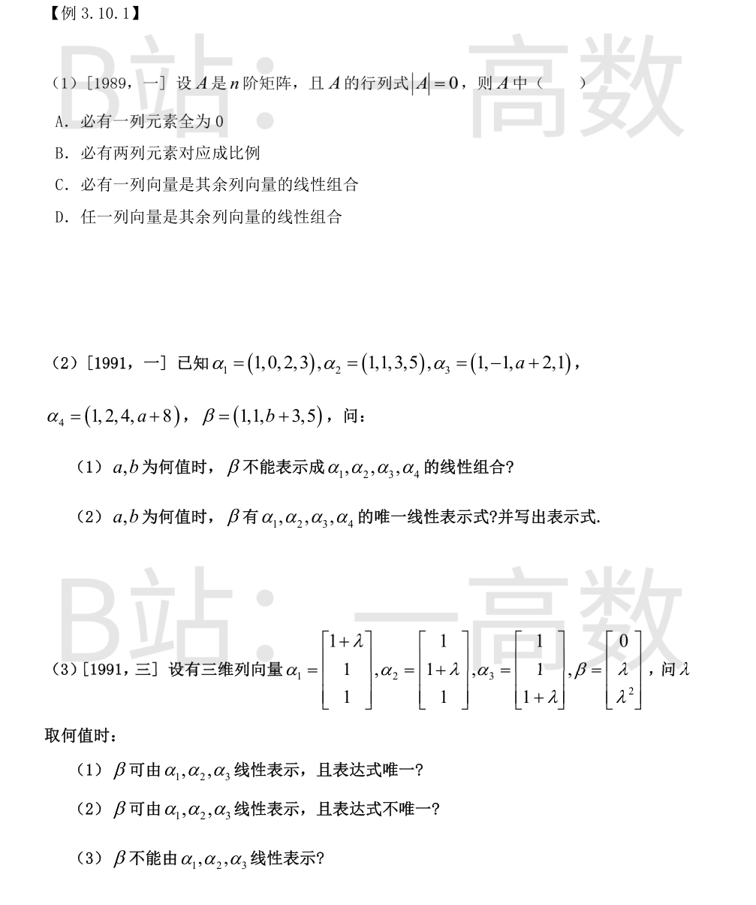
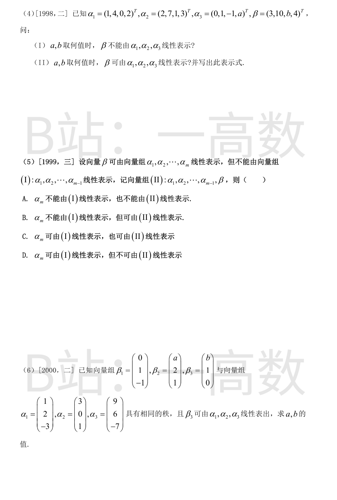
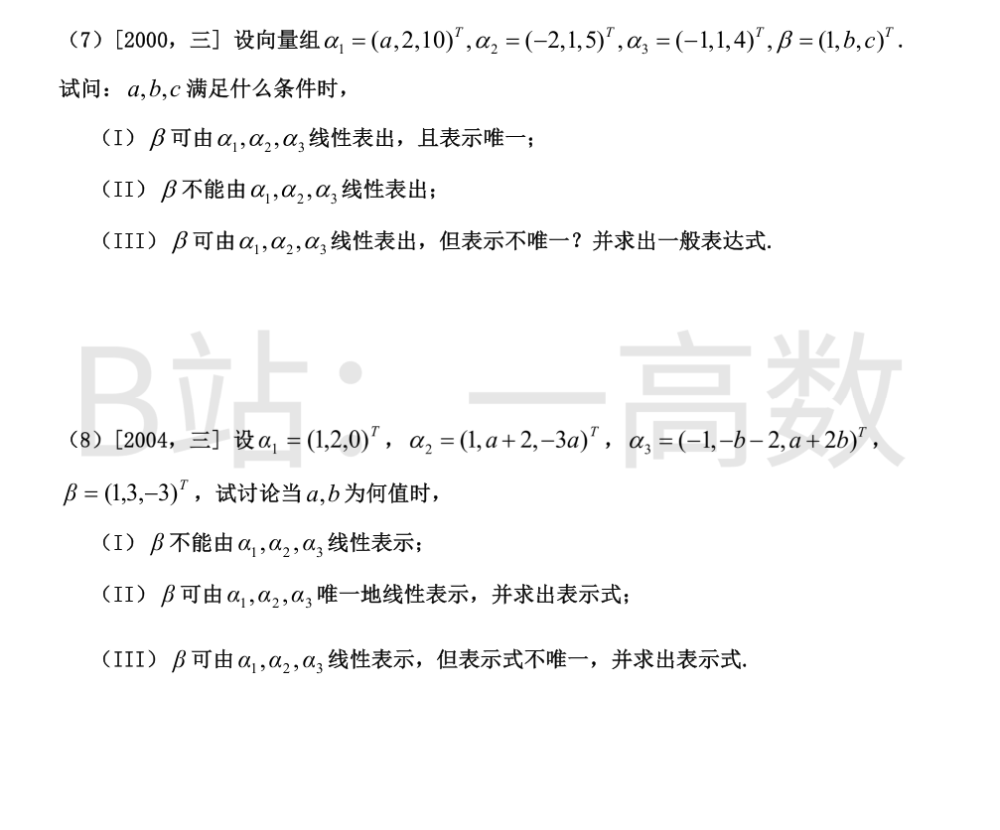
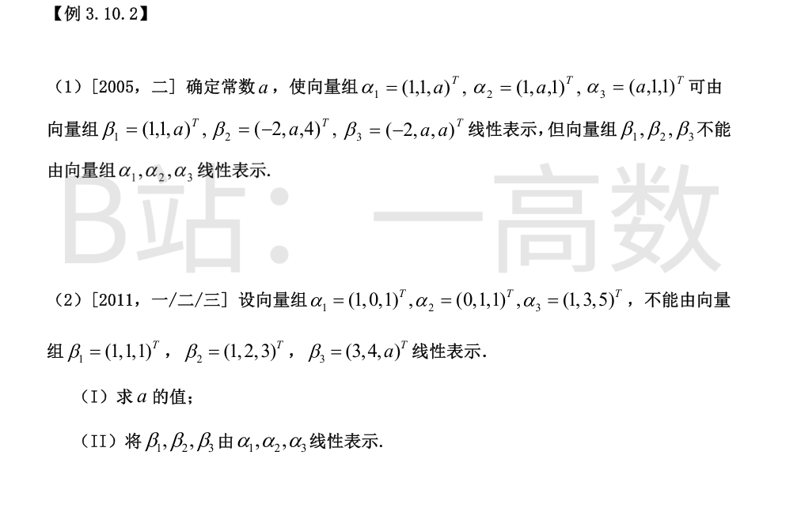
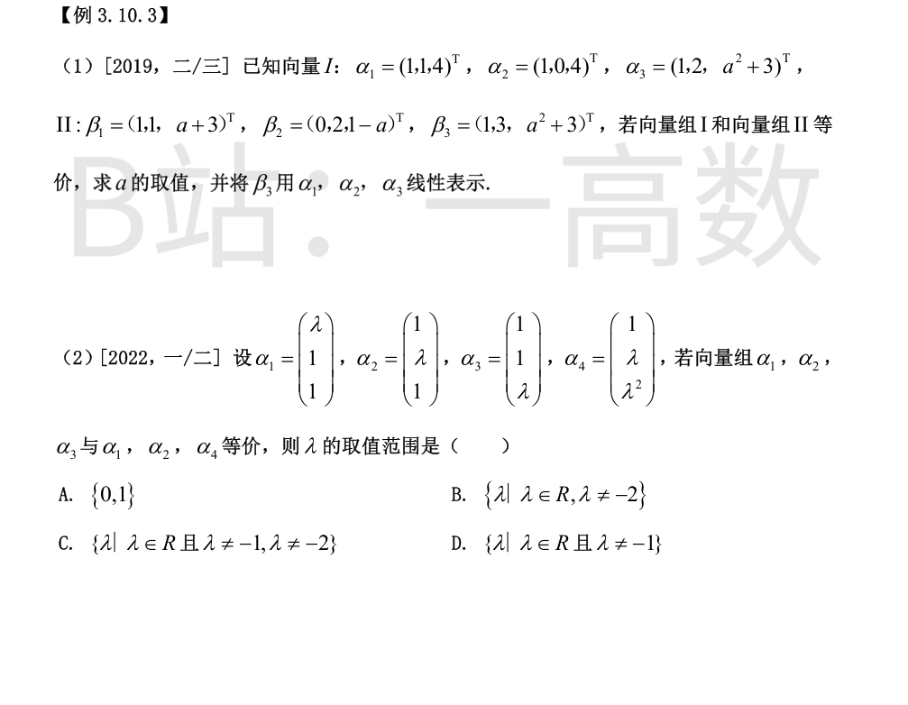
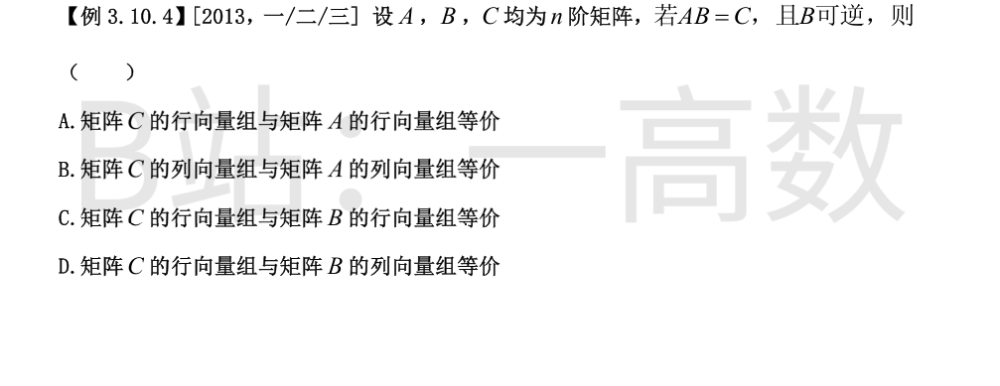

$|A|=0\iff$ 列向量组线性相关 $\iff$ 其中**某一**列向量可由其余列向量线性表示，故 C 正确。
A 反例：$\begin{pmatrix}1&1\\1&1\end{pmatrix}$ 无零列；B 反例：$\begin{pmatrix}1&0&1\\0&1&1\\1&1&2\end{pmatrix}$（$\alpha_3=\alpha_1+\alpha_2$，但任两列不成比例）；D 反例：$\begin{pmatrix}1&0\\0&0\end{pmatrix}$ 中第一列不能由第二列表示。
对 $\begin{pmatrix}\alpha_1^T\alpha_2^T\alpha_3^T\alpha_4^T&\beta^T\end{pmatrix}$ 行变换：
$$\to\begin{pmatrix}1&1&1&1&1\\0&1&-1&2&1\\0&0&a+1&0&b\\0&0&0&a+1&0\end{pmatrix}$$
(1) $a=-1$ 时第三行成 $0=b$：若 $b\neq0$ 则无解，$\beta$ 不能表示。
(2) $a\neq-1$：$x_4=0$，$x_3=\frac{b}{a+1}$，$x_2=1+x_3-2x_4=1+\frac{b}{a+1}$，$x_1=1-x_2-x_3-x_4=-\frac{2b}{a+1}$，唯一：
$$\beta=-\frac{2b}{a+1}\alpha_1+\frac{a+b+1}{a+1}\alpha_2+\frac{b}{a+1}\alpha_3+0\cdot\alpha_4$$
（$a=-1,b=0$ 时有无穷多表示。）
$$\det\begin{pmatrix}1+\lambda&1&1\\1&1+\lambda&1\\1&1&1+\lambda\end{pmatrix}=(\lambda+3)\lambda^{2}$$
① $\lambda\neq0$ 且 $\lambda\neq-3$：系数行列式非零，表达式唯一。
② $\lambda=0$：$\alpha_1=\alpha_2=\alpha_3=(1,1,1)^{T}$，$\beta=0$，凡 $k_1+k_2+k_3=0$ 的组合都表示 $\beta$，表达式不唯一。
③ $\lambda=-3$：$\alpha_1=(-2,1,1)^{T},\alpha_2=(1,-2,1)^{T},\alpha_3=(1,1,-2)^{T}$，三向量之和为零向量而 $\beta=(0,-3,9)^{T}$ 的分量和 $=6\neq0$，若可表示则两边取分量和应同为零，矛盾，故不能表示。
增广矩阵行变换：
$$\begin{pmatrix}1&2&0&3\\4&7&1&10\\0&1&-1&b\\2&3&a&4\end{pmatrix}\to\begin{pmatrix}1&2&0&3\\0&-1&1&-2\\0&0&0&b-2\\0&0&a-1&0\end{pmatrix}$$
(I) $b\neq2$ 时出现 $0=b-2\neq0$ 矛盾行，不能表示（与 $a$ 无关）。
(II) $b=2$：第4行给出 $(a-1)x_3=0$。若 $a\neq1$：$x_3=0$，$-x_2+x_3=-2\Rightarrow x_2=2$，$x_1+2x_2=3\Rightarrow x_1=-1$，唯一：$\beta=-\alpha_1+2\alpha_2$（验证：$-(1,4,0,2)+(4,14,2,6)=(3,10,2,4)$ ✓）。若 $a=1$：$x_3=t$ 任意，$x_2=2+t$，$x_1=-1-2t$：$\beta=(-1-2t)\alpha_1+(2+t)\alpha_2+t\alpha_3$，$t\in R$。
若 $\alpha_m$ 可由 (I) 表示，则 $\beta$ 可由 (I) 表示，与题设矛盾，故 $\alpha_m$ 不能由 (I) 表示。
由题设 $\beta=k_1\alpha_1+\cdots+k_{m-1}\alpha_{m-1}+k_m\alpha_m$ 且 $k_m\neq0$（否则 β 可由 (I) 表示），移项得 $\alpha_m=\frac1{k_m}\beta-\frac{k_1}{k_m}\alpha_1-\cdots-\frac{k_{m-1}}{k_m}\alpha_{m-1}$，即 $\alpha_m$ 可由 (II) 表示。选 B。
$\det[\alpha_1\alpha_2\alpha_3]=-6-12+18=0$，而 $\alpha_1,\alpha_2$ 不成比例，$r(\alpha_1,\alpha_2,\alpha_3)=2$。
$\alpha_1\times\alpha_2=(2,-10,-6)\propto(1,-5,-3)$，故 $\operatorname{span}\{\alpha_1,\alpha_2\}=\{z:z_1-5z_2-3z_3=0\}$。$\beta_3=(b,1,0)$ 可由 $\alpha$ 组表出 $\Rightarrow b-5-0=0\Rightarrow b=5$。
由秩相等：$\det[\beta_1\beta_2\beta_3]=3b-a=15-a=0\Rightarrow a=15$。
验证：$a=15,b=5$ 时 $\beta_1,\beta_2$ 不成比例，$r(\beta_1\beta_2\beta_3)=2=r(\alpha_1\alpha_2\alpha_3)$，且 $\beta_3=\tfrac52\alpha_1+\tfrac12\alpha_2$（$\tfrac52(1,2,-3)+\tfrac12(3,0,1)=(5,1,0)$ ✓）。
$\det[\alpha_1\alpha_2\alpha_3]=-(a+4)$。
(I) $a\neq-4$ 时唯一。解方程组（按分量）：
$$ax_1-2x_2-x_3=1,\quad 2x_1+x_2+x_3=b,\quad 10x_1+5x_2+4x_3=c$$
(2)×5 与 (3) 相减：$-x_3=c-5b\Rightarrow x_3=5b-c$；(1)+2(2)：$(a+4)x_1+x_3=1+2b\Rightarrow x_1=\frac{c-3b+1}{a+4}$；$x_2=b-2x_1-x_3=\frac{ac+2c-4ab-10b-2}{a+4}$。数值抽查（a=0,b=0,c=0：$x=(\tfrac14,-\tfrac12,0)$，代回成立 ✓）。
(II)(III) $a=-4$：此时 (1)+2(2) 得 $x_3=1+2b$，(3)-5(2) 得 $x_3=5b-c$。相容要求 $1+2b=5b-c$，即 $c=3b-1$。
- 若 $c\neq3b-1$：矛盾，不能表示。
- 若 $c=3b-1$：$x_3=2b+1$，(2) 给出 $2x_1+x_2=-b-1$，取 $x_1=t$，$x_2=-(2t+b+1)$：
$$\beta=t\alpha_1-(2t+b+1)\alpha_2+(2b+1)\alpha_3,\quad t\in R$$
数值抽查（a=-4,b=0,c=-1，t=1：$(1,-3,1)$ 代回 $=(1,0,-1)$ ✓）。
$\det[\alpha_1\alpha_2\alpha_3]=a(a-b)$。增广矩阵行变换：
$$\begin{pmatrix}1&1&-1&1\\2&a+2&-b-2&3\\0&-3a&a+2b&-3\end{pmatrix}\to\begin{pmatrix}1&1&-1&1\\0&a&-b&1\\0&0&a-b&0\end{pmatrix}$$
(I) $a=0$：第二行为 $(0,0,-b\,|\,1)$，与第三行 $(0,0,b\,|\,-3)$ 相加得 $0=-2$，矛盾，不能表示（任意 b）。
(II) $a\neq0$ 且 $a\neq b$：唯一解 $(a-b)x_3=0\Rightarrow x_3=0$，$ax_2=1\Rightarrow x_2=\tfrac1a$，$x_1=1-x_2=\tfrac{a-1}{a}$：
$$\beta=\frac{a-1}{a}\alpha_1+\frac1a\alpha_2$$
(III) $a=b\neq0$：第三行为零行，$x_2-x_3=\tfrac1a$，取 $x_3=t$，$x_2=\tfrac1a+t$，$x_1=1-x_2+x_3=1-\tfrac1a$：
$$\beta=\left(1-\tfrac1a\right)\alpha_1+\left(\tfrac1a+t\right)\alpha_2+t\alpha_3,\quad t\in R$$

条件即 $r(\beta)=r(\beta,\alpha)$ 且 $r(\alpha)<r(\alpha,\beta)$。
$\det[\alpha_1\alpha_2\alpha_3]=-(a-1)^2(a+2)$，$\det[\beta_1\beta_2\beta_3]=(a-4)(a+2)$。
① $a\neq1,-2,4$：$r(\alpha)=3$，$\beta$ 组必可由 $\alpha$ 组表示，违背第二个条件。
② $a=4$：$r(\alpha)=3$（$\det\alpha=-54\neq0$），同样违背。
③ $a=-2$：$\det\beta=0$，$r(\beta)=2$（$\beta_2=-2\beta_1$，$\beta_3=-2(1,1,1)^{T}$）。但 $\operatorname{span}\{\beta\}=\{(x,y,z):x=y\}$（$\beta_1=(1,1,-2)^T,\beta_3=(-2,-2,-2)^T$ 生成），$\alpha_2=(1,-2,1)^T$ 不在其中，故 $\alpha$ 组反而不能由 $\beta$ 组表示，违背第一个条件。
④ $a=1$：$\alpha_1=\alpha_2=\alpha_3=(1,1,1)^{T}$，$r(\alpha)=1$；$\det\beta=-9\neq0$，$r(\beta)=3$。$\alpha$ 组当然可由 $\beta$ 组表示（$\beta$ 组张满 $R^3$）；而 $\beta_2=(-2,1,4)^T$ 不是 $(t,t,t)$ 型，$\beta$ 组不能由 $\alpha$ 组表示。两条件均满足。
故 $a=1$。
(I) $\det[\alpha_1\alpha_2\alpha_3]=2-1=1\neq0$，$r(\alpha)=3$。$\alpha$ 组不能由 $\beta$ 组表示 $\iff r(\beta)<3$（因 $r(\alpha,\beta)=3$ 恒成立）。$\det[\beta_1\beta_2\beta_3]=a-5=0\Rightarrow a=5$。
(II) 对 $\begin{pmatrix}\alpha_1\alpha_2\alpha_3&\beta_j\end{pmatrix}$ 求解。一般地 $x_1\alpha_1+x_2\alpha_2+x_3\alpha_3=(b_1,b_2,b_3)^{T}$ 给出 $x_1+x_3=b_1,\ x_2+3x_3=b_2,\ x_1+x_2+5x_3=b_3$，解得 $x_3=b_3-b_1-b_2$，$x_1=b_1-x_3$，$x_2=b_2-3x_3$。
- $\beta_1=(1,1,1)^T$：$x=(2,4,-1)$，$\beta_1=2\alpha_1+4\alpha_2-\alpha_3$。
- $\beta_2=(1,2,3)^T$：$x=(1,2,0)$，$\beta_2=\alpha_1+2\alpha_2$。
- $\beta_3=(3,4,5)^T$：$x=(5,10,-2)$，$\beta_3=5\alpha_1+10\alpha_2-2\alpha_3$。
逐一数值验证成立（如 $2(1,0,1)+4(0,1,1)-(1,3,5)=(1,1,1)$ ✓）。

$\det[\alpha_1\alpha_2\alpha_3]=1-a^{2}$，$\det[\beta_1\beta_2\beta_3]=2(a^{2}-1)$。
① $a\neq\pm1$：两组行列式均非零，秩均为3，都张满 $R^3$，等价。
② $a=1$：$\det$ 均为0。$r(I)=2$（$\alpha_1=\tfrac12(\alpha_2+\alpha_3)$，$\alpha_2,\alpha_3$ 无关），$r(II)=2$（$\beta_3=\beta_1+\beta_2$，$\beta_1,\beta_2$ 无关），且 $\beta_1=\alpha_1\in\text{span}(I)$，$\beta_2=(0,2,0)^T=\alpha_3-\alpha_2\in\text{span}(I)$，故 II⊂span(I)，秩相等则张成相同，等价。
③ $a=-1$：$r(I)=r(II)=2$，但 $\beta_1=(1,1,2)^T\notin\operatorname{span}\{\alpha_1,\alpha_2\}=\{(s+t,s,4s+4t)\}$（第三分量 $=4\times$第一分量，而 $2\neq4$），不等价。
故等价 $\iff a\neq-1$。此时解 $x_1\alpha_1+x_2\alpha_2+x_3\alpha_3=\beta_3$：
$$x_1+x_2+x_3=1,\quad x_1+2x_3=3,\quad 4x_1+4x_2+(a^2+3)x_3=a^2+3$$
第三行 $=$ 4×第一行（当 $a=1$）或解出：$4+(a^{2}-1)x_3=a^{2}+3\Rightarrow x_3=1$，$x_1=1$，$x_2=-1$：
$$\beta_3=\alpha_1-\alpha_2+\alpha_3$$
验证：$(1,1,4)-(1,0,4)+(1,2,a^2+3)=(1,3,a^2+3)$ ✓。
$\det[\alpha_1\alpha_2\alpha_3]=(\lambda+2)(\lambda-1)^{2}$，$\det[\alpha_1\alpha_2\alpha_4]=(\lambda^{2}-1)^{2}$。
- $\lambda\neq1,-2$：组I秩3。此时若 $\lambda\neq\pm1$，组II行列式 $\neq0$ 秩3，两组均张满 $R^3$，等价 ✓（含 $\lambda=0$：$\det_{II}=1\neq0$ ✓）。
- $\lambda=1$：两组全是 $(1,1,1)^{T}$，秩都为1且张成相同，等价 ✓。
- $\lambda=-1$：$\det_I=(1)(-2)^2=4\neq0$ 秩3，但 $\det_{II}=0$ 秩<3，不等价 ✗。
- $\lambda=-2$：组I秩2，张成为平面 $\{x+y+z=0\}$（三个向量分量和均为0且互不成比例）；$\alpha_4=(1,-2,4)^T$ 分量和 $=3\neq0$，$\det_{II}=9\neq0$ 秩3，不等价 ✗。
故 $\lambda$ 范围为 $\{\lambda\in R:\ \lambda\neq-1,\ \lambda\neq-2\}$，选 C。

$C=AB$ 的第 j 列 $=A\cdot(B$ 的第 j 列$)$，是 A 的列向量的线性组合；又 $B$ 可逆，$A=CB^{-1}$，A 的每一列也是 C 的列向量的线性组合。故 A 与 C 的列向量组可以互相线性表示，即等价，选 B。
行方向：C 的行是 B 的行的组合，但反向需 $A$ 可逆（$B=A^{-1}C$），题设未给，故 A、C 不成立；D 概念混搭无根据。